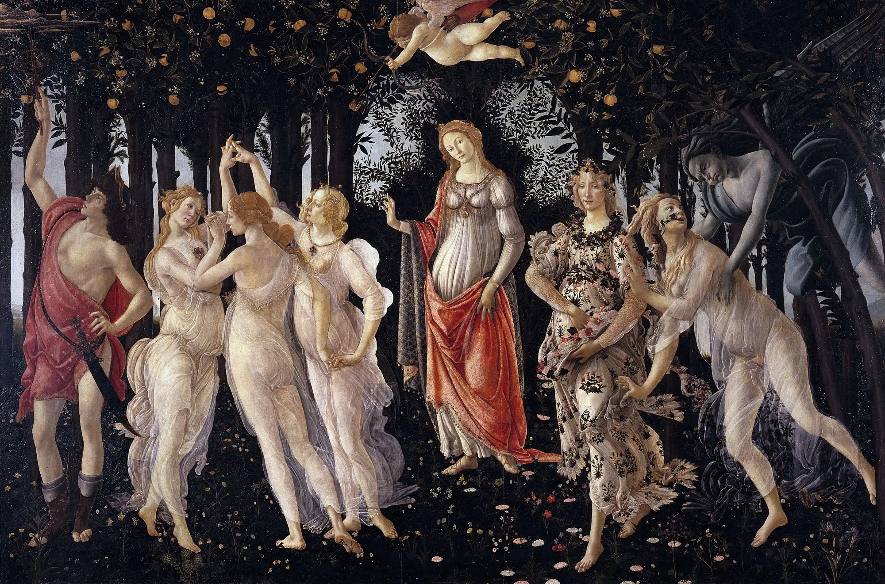

La Renaissance et l’humanisme en France au XVIᵉ siècle
La Renaissance est une période de renouveau artistique, culturel et intellectuel qui débute en Italie au XVe siècle avant de s’étendre à la France au XVIᵉ siècle. Elle marque la transition entre le Moyen Âge et les Temps modernes, mettant l’accent sur la redécouverte de l’Antiquité et sur la place centrale de l’homme dans la pensée et la création.

🌿 Introduction
La Renaissance transforme profondément la société européenne. Les découvertes scientifiques, les progrès de l’imprimerie et les grandes explorations du monde élargissent les connaissances et favorisent la diffusion des idées. En France, cette période correspond à un épanouissement des arts, des lettres et des sciences.
📚 L’humanisme
L’humanisme est un courant de pensée fondamental de la Renaissance. Il valorise la raison, la connaissance, la liberté de penser et l’éducation. Les humanistes croient au progrès et à la dignité de l’homme, convaincus qu’il peut s’améliorer grâce à la culture et à l’étude des textes anciens grecs et latins.
- Ils prônent la tolérance et le dialogue, opposés au dogmatisme religieux.
- L’homme devient le centre de la réflexion intellectuelle, et non plus Dieu.
- L’éducation est considérée comme un moyen d’émancipation et de perfectionnement moral.
👨🎓 Les grandes figures de l’humanisme français
- François Rabelais : écrivain et médecin, auteur de Gargantua et Pantagruel, il célèbre la joie, la curiosité et l’esprit critique.
- Michel de Montaigne : philosophe, auteur des Essais, il prône la tolérance, la sagesse et la réflexion personnelle.
- Léonard de Vinci : artiste et savant italien, invité en France par le roi François Ier, symbolise l’ouverture culturelle et scientifique de l’époque.
🏛️ Le rôle du roi François Ier
- Roi de France de 1515 à 1547, François Ier encourage les arts, la littérature et l’éducation.
- Il fonde le Collège de France pour promouvoir la connaissance libre et ouverte.
- Il invite de nombreux artistes italiens, dont Léonard de Vinci, et fait construire de magnifiques châteaux de la Loire.
- Sous son règne, la France devient un foyer majeur de la culture européenne.
🌟 Héritage
- La Renaissance et l’humanisme ouvrent la voie à la pensée moderne et à la liberté intellectuelle.
- Ils marquent le début d’une ère de progrès artistique et scientifique sans précédent.
- Cette période reste un symbole d’ouverture, de curiosité et d’épanouissement de l’esprit humain.